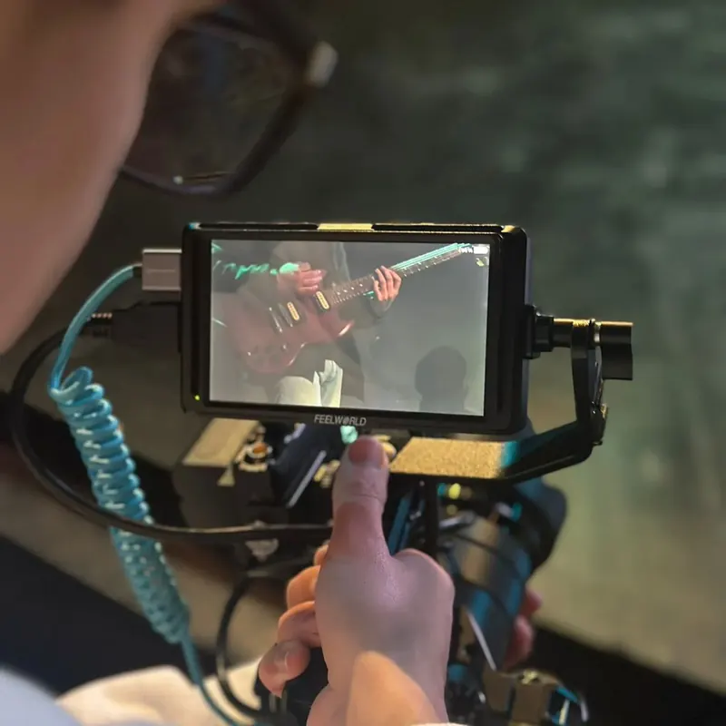

Producción audiovisual
Desde muy chico me apasiona la postproducción. Hoy edito videos y produzco motion graphics de forma profesional, y trabajo con cámara, montaje y color.

Mi camino
Empecé editando videos en Camtasia Studio y con el tiempo descubrí en Adobe Premiere Pro la herramienta donde pude potenciar mi creatividad. La edición se volvió uno de mis espacios favoritos: puedo pasar horas perfeccionando detalles, probando ideas nuevas y superándome.
También encontré una gran motivación en el manejo de cámara, que desarrollé en proyectos académicos y en mi iglesia local, donde formo parte del equipo de transmisión en vivo: dirección de cámaras, montaje y encuadres en tiempo real.

Hoy
En Alpha Efficiency edito videos y produzco motion graphics para la empresa, incluyendo testimonios de clientes y contenido institucional.
Como freelance, con Tomix Visuals, hago edición de video y postproducción para clientes desde 2018.
La Casa del Té
- Año
- 2023
- Materia
- Lenguaje Audiovisual I — UNLa
- Rol
- Montajista, cámara y escenografía
- Equipo
- Filmado con Samsung A23
Tareas
- Edición completa del corto en Adobe Premiere Pro.
- Grabación de planos específicos.
- Armado de la escenografía junto al equipo.
Desafío
La falta de iluminación. La resolvimos con veladores y superficies reflectantes caseras.
Costuras del Pasado
- Año
- 2025
- Materia
- Lenguaje Audiovisual II — UNLa
- Rol
- Foquista, camarógrafo, colorista y guionista
- Equipo
- iPhone 14 y gimbal
Tareas
- Escritura del guion literario y del guion técnico.
- Armado de plantas de cámara y selección de la paleta de color.
- Operación de cámara y foco durante el rodaje.
- Corrección de color en Premiere Pro.
En pantalla
Uno de los cortometrajes que realicé con mi grupo en la Universidad Nacional de Lanús.
Lo que busco
Mi objetivo profesional es dejar una huella en el mundo audiovisual, especialmente en el cine. Me motivan los proyectos que conectan con las personas desde lo visual y lo narrativo.
Quiero seguir creciendo en dirección de fotografía y postproducción, sumando cada aprendizaje a nuevos desafíos.

Proyectos


Herramientas
Las que uso en esta área en el día a día.
- Premiere Pro
- After Effects
- Lightroom
- vMix
- OBS Studio
Hagamos algo que se note.
¿Tenés un sitio, un producto o una campaña en mente? Contame qué necesitás y lo pensamos juntos. Trabajo en remoto, en español o en inglés.
wikipediatomitob@gmail.com